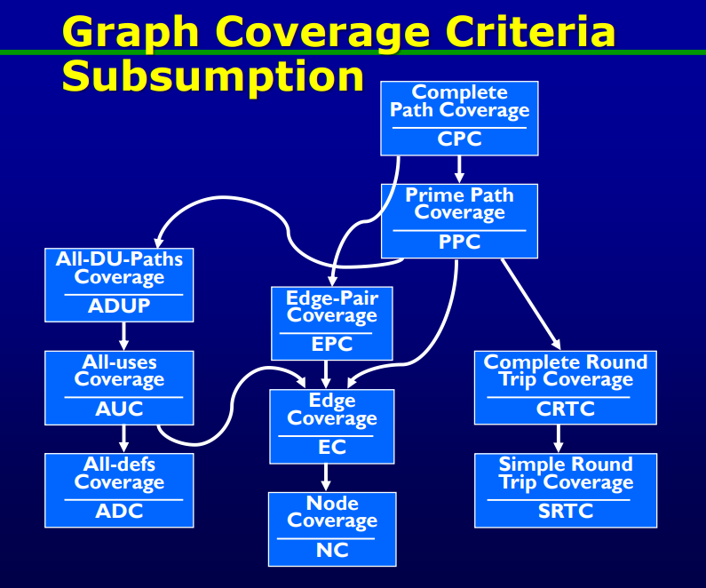
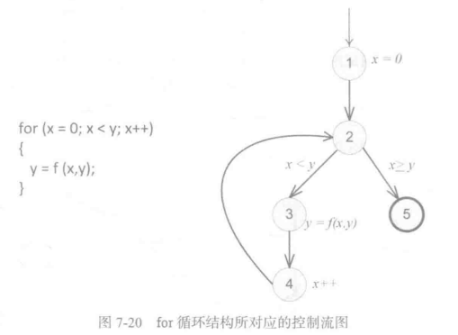

图覆盖｜结构化准则与数据流准则
Graph Coverage
概述
-
图是测试中
最常用的结构- 图有很多的来源：控制流图、设计结构、有限状态机、状态图、用例等
-
图的基本概念：
- 一个
节点的集合N - 一个
初始节点的集合 N0，其中 - 一个
终止节点的集合 Nf，其中 - 一个
边的集合 E，E 是 的一个子集- 边可以看作从一个节点到另一个节点的连接，表示为 (ni, nj)
- ni 是先驱节点（predecessor），nj 是后继节点（successor）
- 一个图要想产生有用的测试用例，那 N, N0, Nf 不可为空，边集可为空
- 有
入边(incoming edge) 但没有前驱节点的初始节点；有加粗边框的节点是终止节点
- 有
- 一个
-
路径(path)：
- 一个由节点组成的序列(sequence) [n1, n2, …, nM]
- 其中每对临近节点(ni,ni+1), 属于边集合 E
- 路径的长度为所
包含边的数目- 只有一个节点的路径长度为0
- 路径 p 的子路径(subpath) 是 p 的一个子序列（也可能是 p 本身）
- 一个由节点组成的序列(sequence) [n1, n2, …, nM]
-
测试路径(Test path)
- 定义：一条长度可能为 0 的路径 p，它起始于 N0 中的某个节点，终止于 Nf 中的某个节点
- 测试路径表示测试用例的执行
- 一些测试路径可以由多个测试执行
- 一些测试路径不能由任何测试执行
-
单入单出图(SESE graphs)
- 所有的测试路径都只有一个起始节点和一个终结节点
- N0 只有一个节点 n0，Nf 也只有一个节点 nf
-
访问(visiting) 和游历(touring)
- 如果一个节点 n 或一条边 e 存在于一条测试路径 p 中，则 p 访问了 n 或 e
- 如果路径 q 是另一条路径 p 的
子路径，则 p 游历了 q
-
测试与测试路径
- 路径映射
- path(t): 测试 t 所执行的测试路径
- path(T): 测试集 T 所执行的测试路径的集合
- 一个图的位置（边和节点）能否被另一个位置到达取决于第一个位置到第二个位置有没有边
- 语法可达(Syntactic reach): 在
图中可以找到两个位置之间的一条子路径 - 语义可达(Semantic reach):
测试可以执行这条子路径 - reachG(N0) 代表从节点 N0 开始所有可达的位置的集合

- 语法可达(Syntactic reach): 在
- 路径映射
-
测试用例与测试路径的映射关系
- 在确定性(Deterministic)软件中，每个测试用例只游历图 G 中的一条测试用例
- 存在多对一关系
- 在不确定性(Non-deterministic)软件中，每个测试用例游历图 G 中的多条测试用例
- 存在多对多关系
- 存在多对多关系
- 在确定性(Deterministic)软件中，每个测试用例只游历图 G 中的一条测试用例
图覆盖标准
Graph Coverage Criteria
-
测试中图的使用方法：
- 以图的形式开发软件模型
- 需要测试来访问或浏览特定的节点、边或子路径集
-
两类图覆盖准则：
- 数据流覆盖标准(Data Flow Coverage Criteria): 要求用变量引用对图表进行注释
- 结构覆盖标准(Structural Coverage Criteria): 仅根据节点和边在图上定义
-
图覆盖(Graph Coverage)
- 给定图覆盖标准 C 的一组测试需求 TR，当且仅当对于 TR 中的每个测试需求 tr，测试路径集 path(T) 中都至少存在一个测试路径 p 满足 tr 的时候，测试用例集 T 满足图 G 的覆盖标准 C
结构化的覆盖准则
- 节点覆盖, Node Coverage (NC)
- 标准定义：测试集 T 满足图 G 上的节点覆盖当且仅当对于 n 中的每个语法上可到达的节点 n ，path(T) 中存在一些路径 p ，使得 p 访问 n
- 形式化定义：对于图 G 中的每个可达的节点 n，TR 包含谓词“访问 n ”
- 简化定义：TR 包含 G 中的每个可到达节点
- 边覆盖, Edge Coverage (EC)
- TR 包含 G 中每个可达的，
长度小于等于 1的路径- 允许只有一个节点且没有边的图
- TR 包含 G 中每个可达的，
- NC和EC仅在一对节点之间存在边和另一个子路径时是不同的
-
边对覆盖, Edge-Pair Coverage (EPC)
- TR 包含 G 中每个可达的长度
小于等于 2的路径 - 用于包含边数少于 2 的图
- TR 包含 G 中每个可达的长度
-
完全路径覆盖, Complete Path Coverage (CPC)
- TR 包含 G 中的所有路径
- 如果图 G 中有环，则不存在实际意义，会产生无穷的路径
-
指定路径覆盖, Specified Path Coverage (SPC)
- TR 包含一个测试路径集合 S，其中 S 是一个参数
解决图中的环
- 简单路径(Simple Path)
- 定义：一个从 ni 到 nj 的路径是简单路径当且仅当路径中的节点 只出现 一次（除了初始节点和终止节点相同的情况）
- 简单路径可能是一个自环，但是它没有内在的循环
- 主路径(Prime Path)
- 定义：对于一条从 ni 到 nj 的路径是主路径当且仅当该路径是一条简单路径，并且它
不是其他任何简单路径的子路径时，这条路径是主路径
- 定义：对于一条从 ni 到 nj 的路径是主路径当且仅当该路径是一条简单路径，并且它
- 主路径覆盖, Prime Path Coverage (PPC)
- TR 包含 G 中的每一条主路径
- 主路径包含点覆盖和边覆盖，但是
不能包含边对覆盖
- 游历, touring
- 如果路径 q 是测试路径 p 的子路径，那么测试用例 p 游历了子路径q
- 经旁游历, Tour With Sidetrips
- 当且仅当子路径 q 中的每条
边出现的顺序和在测试路径 p 中出现的顺序相同，那么 p 经旁游历 q - 当游历返回到同一个节点，这个游历就包含一个侧旁游历
- 当且仅当子路径 q 中的每条
- 绕路游历, Tour With Detours
- 子路径 q 中的所有
节点出现的顺序在测试路径 p 中也是相同的 - 当游历作为 ni 的后继返回到主路径上，这个游历就包含一个绕道游历
- 子路径 q 中的所有
- 往返路径, Round-Trip Path
- 一条长度非零且初始节点和终止节点相同的主路径
- 简单往返覆盖, Simple Round Trip Coverage (SRTC)
- 对于 G 中所有可达的，且可以作为往返路径起点和终点的节点，TR 包含至少一条往返路径
- 完全往返覆盖, Complete Round Trip Coverage (CRTC)
- 对于 G 中所有可达的节点，TR 包含所有的往返路径
处理不可行的测试需求
-
不可行的测试需求主要有
- 死代码
- 程序中自相矛盾的错误
-
尽量不使用sidetrips或者detour去满足测试需求
-
在不可避免的情况下使用sidetrip和detour（实际上是降低了测试标准）满足测试需求
-
最大限度游历, Best Effort Touring
数据流准则
-
应用数据流图的目的是确保变量能够被正确的 定义和使用
-
定义和使用相关定义
- 定义, Definition(def)
- 变量被定义出来并且存储到内存的某个位置
- 使用, use
- 变量被使用的位置
对于一条语句来说，语句左边的变量就是def，语句右边的变量就是use
对于一条测试路径，要有包含从定义到使用的部分- def(n) / def(e)
- 在节点n和边e上定义的变量的集合
- use(n) / use(e)
- 在节点n和边e上使用的变量的集合
- 在节点n和边e上使用的变量的集合
- 定义, Definition(def)
-
DU Pairs and DU Paths
- DU pair（定义使用对）
- 定义使用对 (Ii,Ij) 表示变量 v 在 Ii 被定义，在 Ij 被使用
- Def-Clear, 无重复定义
- 存在一条由 Ii 到 Ij 的路径，对于这条路径上的每个不属于起始节点和终止节点的节点和边都不存在对于变量 v 的定义
- Reach, 可达
- 针对变量 v 从定义处 Ii 到使用处 Ij 存在一条无重复定义的路径
- du-path
- 变量 v 从定义到使用这一段路径即
是简单路径也是无重复定义路径 - du(Ii, Ij, v)表示变量 v 从定义处 Ii 到使用处 Ij 的 du-path 的集合
- du(Ii, v)表示变量 v 从定义处 Ii 开始的 du-path 的集合
- 变量 v 从定义到使用这一段路径即
- du-tour
- 路径 p
du游历子路径 d 当且仅当 d 是针对变量 v 的一条无重复定义的简单路径
- 路径 p
- DU pair（定义使用对）
- 测试标准
- 全定义覆盖, All-defs coverage (ADC)
- 对于每个定义路径集合 S = du(n, v), TR 包含 S 中
至少一条路径 d - 每一个 def 都能到达一个 use
- 对于每个定义路径集合 S = du(n, v), TR 包含 S 中
- 全使用覆盖, All-uses coverage (AUC)
- 对于每个定义对集合 S = du(ni, nj, v), TR 包含 S 中至少一条路径 d
- 让每一个定义可能到达的use都被覆盖到
两者的区别在于
- 针对一个变量的定义处，ADC 只要求从定义处出发的 du-path 中其中一条就可以
- 而 AUC 则要求定义处到多个使用处的每一个 du-path 集合里，都要至少一条
- 全定义使用路径覆盖, All-du-paths coverage (ADUPC)
- 在针对变量 v 的 du(Ii,Ij,v) 集合的
所有路径都要在 TR 中
- 在针对变量 v 的 du(Ii,Ij,v) 集合的
- 全定义覆盖, All-defs coverage (ADC)
图覆盖的包含关系

基于源代码的图覆盖
基于源代码的结构化图覆盖
- 对于源代码而言，最通用的图称为 控制流图(Control Flow Graph, GFG)
- 结点：对应于一系列语句（基本块）
- 边：对应于控制的转移
- 基本块：一段最长的可以被同时执行的程序语句序列
- 循环需要添加额外的结点
- 不表示语句或基本块的结点

- if-else 结构
- 结点 1 代表所要判定的条件，有两条外边，它也被称为决策结点
- 结点 4 被称为汇合结点
- while 结构
- 结点 2 有时被称为“虚拟节点”，因为它不代表任何实际语句
- 结点 2 也可以被认为代表一个决策

- for 循环结构
- 虽然初始化、条件判定和循环变量自增都在程序的同一行，但需要与不同的结点相关联
- 变量自增和方法调用被放在了不同的结点中
- switch 结构
- 没有 break 的分支要进入下一个 case

基于源代码的数据流图覆盖
- 源代码的数据流覆盖
-
定义def：将数据存储到内存的某个位置
- 在赋值语句中对应语句的左侧变量
- 程序中的函数调用的实参，并且改变变量的值
- 程序中的形参
- 程序的输入
-
使用use：变量的值被访问的位置
- 在赋值语句中对应语句的右侧变量
- 在条件判断语句两侧的变量
- 程序中的函数调用的实参，并且不改变变量的值
- 程序的输出
- 有返回值的方法或程序的返回值
-
在以下情况下我们认为def和use出现在同一个节点所产生的de-path是有意义的：
- def在use之后出现
- 变量在一个环中
-
本博客所有文章除特别声明外，均采用 CC BY-SA 4.0 协议 ，转载请注明出处！